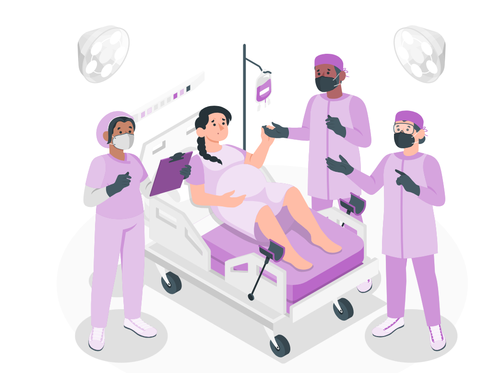

At Rishika Mother and Child Hospital, we provide expert gynecological care tailored to meet the unique health needs of women at every stage of life — from adolescence to menopause. Our comprehensive services are designed to promote wellness, prevent complications, and manage a wide range of women’s health conditions with compassion and clinical precision.
We are equipped with specialized departments including Maternity Services, Fetal Medicine, NICU, and Lactation Clinics — each designed to support a smooth and safe childbirth experience. Our dedicated team of experienced obstetricians, gynecologists, neonatologists, and nurses work together to provide round-the-clock care tailored to your needs.
Childbirth is a cherished milestone in every family’s life. At Rishika, we make it even more memorable with our personalized care plans, advanced labor wards, and a warm, comforting environment. From routine deliveries to high-risk pregnancies such as eclampsia, placenta previa, gestational diabetes, or heart complications, we are fully prepared to handle every scenario with precision and empathy.
Our mission is not only to ensure a safe delivery but also to help every mother feel confident, informed, and supported. With the latest medical technology and a patient-first approach, we are proud to be the trusted choice for expectant mothers across Telangana.
Let us walk with you through every step of motherhood — with care, confidence, and compassion.
We offer complete care throughout your pregnancy journey — from initial consultation to successful delivery. Every stage is managed with expert guidance and emotional support.
Regular checkups ensure the healthy growth of the baby and early detection of potential issues. Our antenatal care also includes maternal health monitoring and counseling.
We specialize in handling complex pregnancies with conditions like gestational diabetes, hypertension, or twin pregnancies. Advanced care plans are designed to ensure the safety of both mother and baby.
State-of-the-art ultrasound and fetal monitoring allow us to track your baby’s development in real time. These services help detect anomalies early and guide personalized care.

Our expert team ensures safe and smooth delivery experiences with dedicated labor rooms and OT support. Whether normal or cesarean, we prioritize mother and baby’s well-being.
Our team offers personalized advice on birth spacing, contraception, and maternal diet. Proper nutrition and planning play a crucial role in long-term women’s health and future pregnancies.